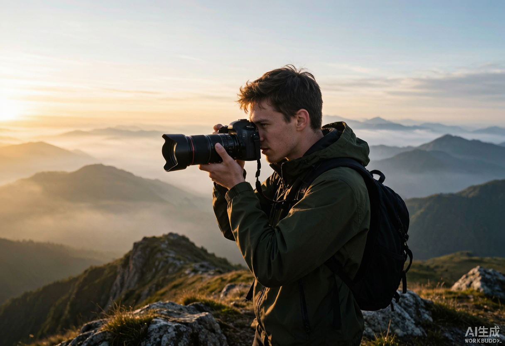
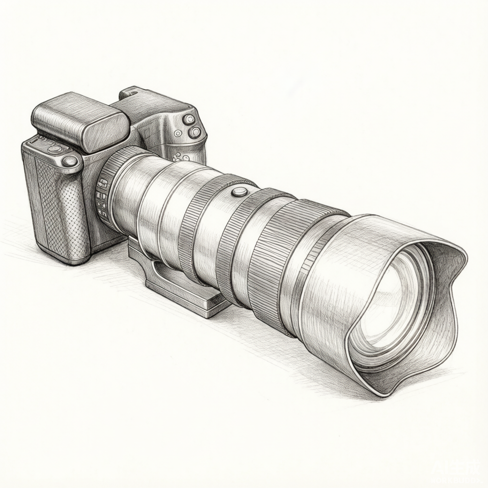
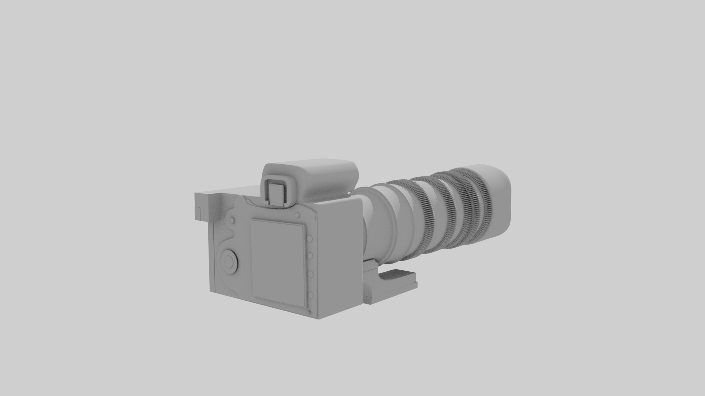
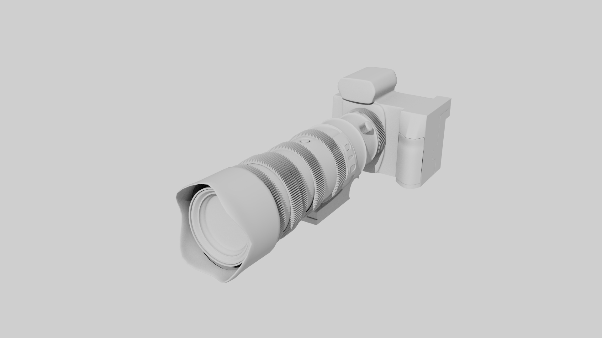
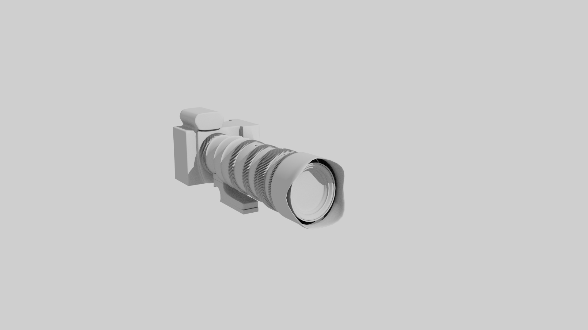

01 / DSLR Camera
模块化单反相机系统
为进阶摄影爱好者设计的一套可扩展影像系统。核心思路是“一机多用”：同一机身通过更换握把模块、取景器模块与镜头卡口，在工作室、户外徒步与生态摄影之间快速切换。
JD 能力映射

01 / 项目目的
一台相机，无法同时满足三种拍摄场景
- 痛点：进阶摄影师常需 2–3 台机身覆盖棚拍、旅行与生态，重复购置成本高；单机身又难在多场景都达到最佳握持、防护与取景。
- 项目目的：以「同一机身 + 可换模块」实现专业级多功能，让一台相机在三场景间快速切换。
73%
受访者希望一机覆盖多场景
68%
认为换镜头时防尘是痛点
54%
不满意长时间持握手感
12
位摄影爱好者深度访谈
02 / 用户调研
从“带什么相机出门”反推模块需求
- 方法：12 位摄影爱好者深度访谈 + 3 位职业摄影师跟拍观察 + 问卷。
- 场景洞察：生态/体育（长续航手柄·防尘·长焦平衡）｜旅行/街拍（轻量化·单手操作）｜工作室（稳定脚架·精确拨盘）。
- 数据：73% 希望一机覆盖多场景 / 68% 认为换镜头防尘是痛点 / 54% 不满意长时间持握。

“出门拍摄经常要在‘带主力机’和‘背不动’之间做妥协。如果机身能像镜头一样按需组合，我会愿意多花一点钱。”
用户访谈 · 生态摄影师阿杰03 / 概念方案
三个方向，三种取舍
- 发散：从「集成化 / 模块化 / 极简化」三路径切入，最终选择 B 方向做深。
- 取舍：A 全能集成（过重放弃）｜C 极简触屏（不符盲操放弃）｜B 可换模块（保留：灵活可扩展、结构可行）。
方案 A · 全能集成
把所有模块集成进一台机身，一机走天下。问题是重量超过 1.5kg，违背旅行场景。
放弃原因：太重，失去便携优势
方案 B · 可换模块（最终）
机身主体保持不变，握把、取景器、卡口环可拆卸。兼顾专业与轻便。
保留原因：灵活、可扩展、结构可行
方案 C · 极简机身
去掉所有物理按键，依赖触屏与 App。外观极简，但不符合快速盲操需求。
放弃原因：专业用户需要实体操控

04 / 设计迭代
用素模验证比例与握持
- 素模验证：1:1 Rhino 素模 + 3D 打印两个握把模块做实物握持测试。
- 纠偏：第一轮重心偏前、长焦下易疲劳 → 第二轮底座加可伸缩脚架环平衡重心。



05 / 最终方案
可换模块 + 防尘快拆
- 形态：主机身 + 三模块（标准握把 / 竖拍电池手柄 / 旅行轻量化前盖），榫卯导轨 + 电子触点，10 秒免工具更换。
- 要点：防尘卡口双密封圈 / 模块化取景器（光电·光学可换） / 依据 12 人手型数据的人机工学握把。
06 / 验证与沉淀
8 位摄影师试用反馈
- 测试：8 位摄影师用 3D 打印泡沫模型做握持与换模块测试。
- 结果：握持 4.5/5 · 换镜耗时 -40% · 87% 认可模块化价值（详见下方数据卡）。
- 沉淀/优化：电池手柄减薄 15% · 增加冬季戴手套拨盘触感。
4.5/5
握持舒适度评分
-40%
镜头更换耗时
87%
认为模块化有价值
2
待优化模块重量
下一轮优化：降低电池手柄厚度 15%；增加冬季戴手套时的拨盘触感。